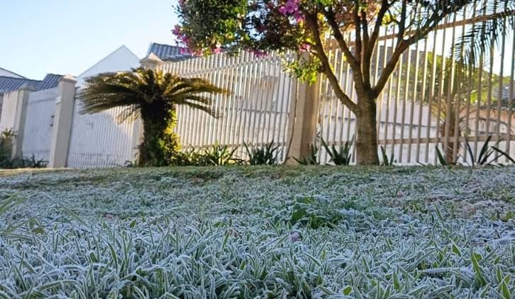

Uma onda de frio chegou em ninguém imaginar e transformou a rotina da Escola Estadual Pinhalzinho na última semana. Localizada no topo de uma das montanhas da região, a escola registrou a marca histórica de -7°C na madrugada de ontem, transformando as salas de aula em verdadeiras geleiras e forçando a comunidade escolar a se adaptar a uma realidade digna do filme "A era do gelo". A neblina densa que cobriu o pátio congelou a água dos bebedouros e criou uma camada de gelo sobre o gramado.
